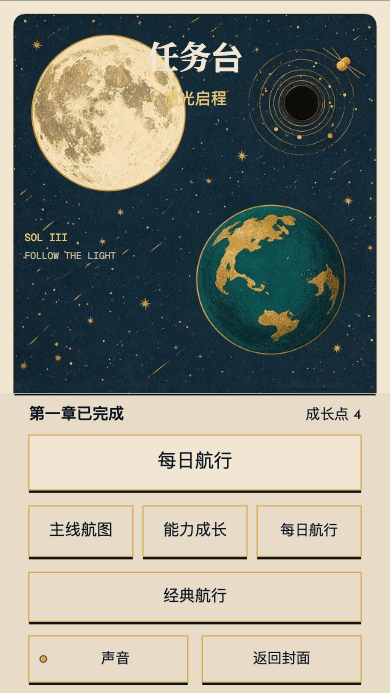
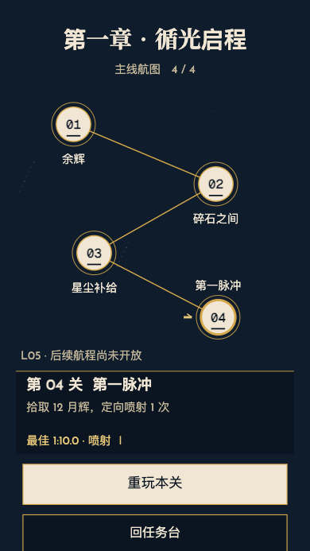
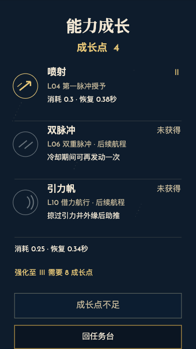
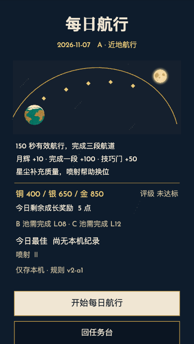
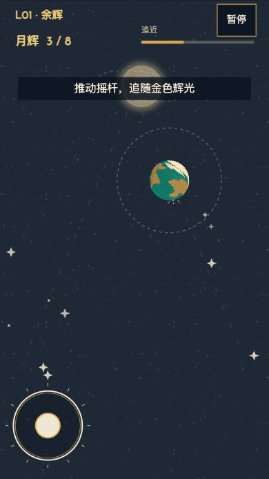
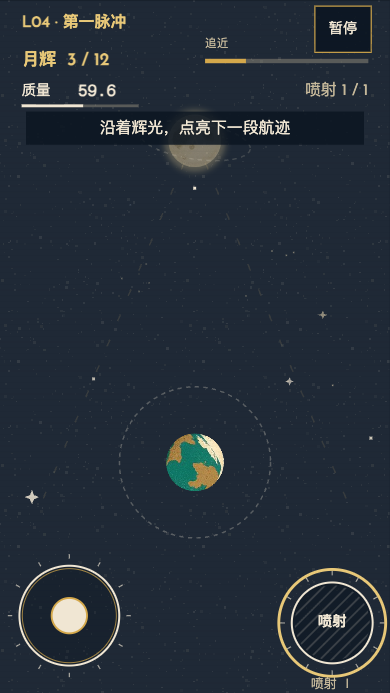
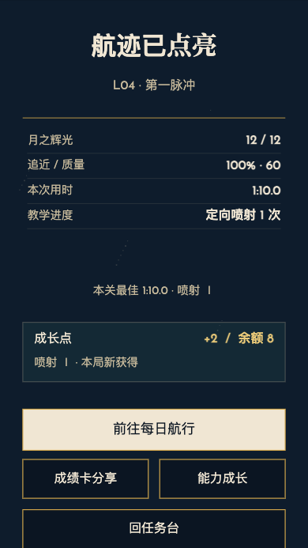
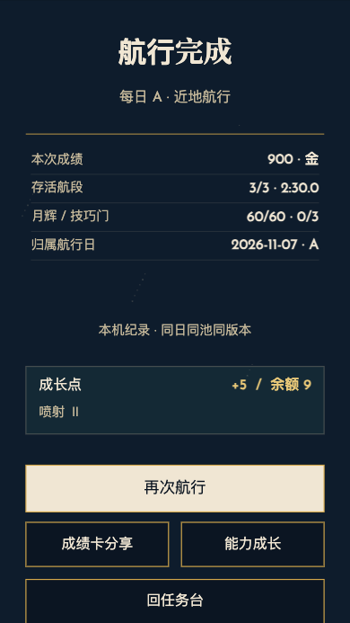
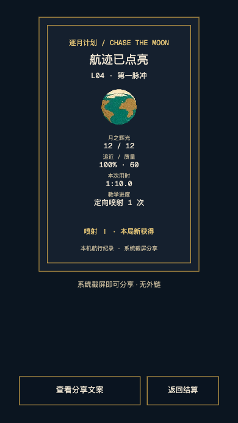

CHASE THE MOON / 2026-11-07 / 本地候选循光启程 · 第一阶段视觉稿
太空时代印刷海报 × 竖屏纵深街机。此稿来自当前可玩 Canvas 状态：已有贴图与程序图形，未另制 AI 栅格裁片。以下为实施画面及美术标注，等待用户体验验收；浏览器模拟不代表微信真机验收。
逻辑画布 270×480，截图已裁剪到舞台，单张宽 390px。原海报与天体保持同源；中文使用原子集及浏览器系统字体回退，微信环境需另验。
任务台

沿用菜单海报与奶油机身。第一章完成后主键转为每日航行；经典航行保留为次级入口。第一章航图

金色双圈表示可进入，奶油填充与刻线表示完成；L05 明示内容尚未开放。四节点维持手机可读尺度。能力成长

成长点与局内资源分开。喷射Ⅱ已持久保存；下一阶展示实际消耗、冷却与费用，其他能力只列主线来源。每日 A 简报

复用原地球与金月贴图，程序绘制金色弧线、辉光和稀疏星点。150 秒、计分、评级与每日剩余奖励集中呈现。L01 余辉

保留伪 3D 纵深、原地球与金色菱形辉光。首次教学只显示追光目标与追近条，不提前出现质量和喷射控件。L04 第一脉冲

喷射永久授予后立即使用；质量与成功喷射次数可见。赭金短尾迹沿当前方向，普通恢复沿同一动作键外缘显示。第一章结算

航迹点亮不冒称已追回月亮。月辉、追近/质量、用时、教学与永久成长分别记录；局内天体不盖住结算文字。每日结算

同日同池本机纪录，保留开始日与能力等级。此次触摸模拟得到 900 分金评级，首次完整航行及评级共奖励 5 点。成绩卡

保持 540×860 内容比例，列出真实关名、资源、用时及实际喷射等级。仅有本机成绩，不宣称全服排名。